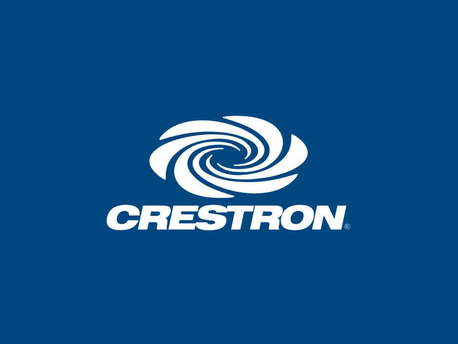
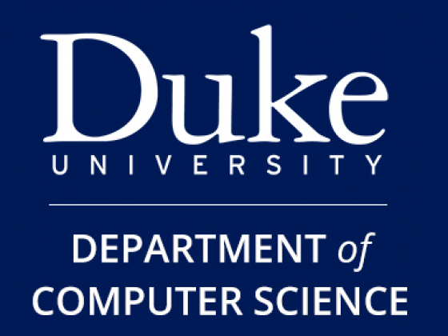
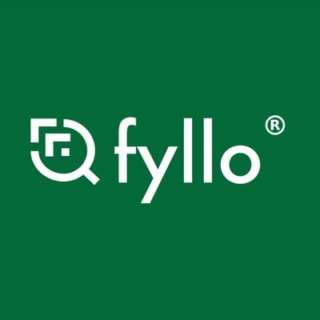
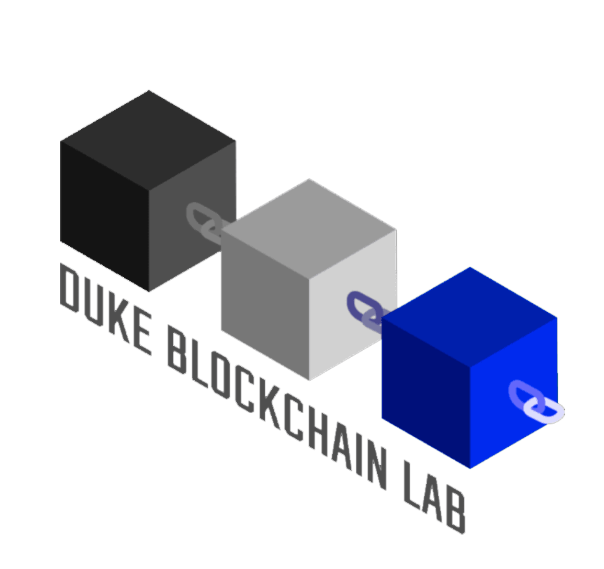

Experience

Crestron Electronics
Software Engineering Intern
May 2025 – Aug 2025
- (To be added after internship – placeholder for now)
Crestron Electronics
Firmware Engineering Intern
May 2024 – Aug 2024
- Studied firmware development and integration workflows for Crestron's DM-NAX audio systems
- Built and ran comprehensive test protocols using FTP, SSH, and XPanel to validate firmware builds
- Automated deployment and testing scripts, reducing manual effort and improving speed of release cycles
- Optimized audio processing and control algorithms, improving system reliability by 20%

Department of Computer Science, Duke University
Teaching Assistant (CS230, CS371, CS527)
Aug 2023 – April 2025
- Led weekly office hours for 300+ students on topics including graph theory, logic, ML and CV fundamentals
- Graded assignments, evaluated exams, and conducted interviews for new TAs
- Received "Outstanding TA of the Year" award for teaching excellence and student support

Fyllo
Software Engineering Intern
Jun 2023 – Aug 2023
- Built a multilingual chatbot using DialogFlow and GPT-4 that increased user engagement by 15%
- Integrated backend APIs and connected the bot to Fyllo's internal database for dynamic responses
- Developed the frontend interface using ReactJS and JavaScript within the production web app

Duke Blockchain Lab
Education Research Fellow
Oct 2022 – Jan 2023
- Conducted academic research on valuation models for utility tokens, funded by Duke Bass Connections
- Analyzed blockchain consensus protocols and tokenomics to create a valuation framework